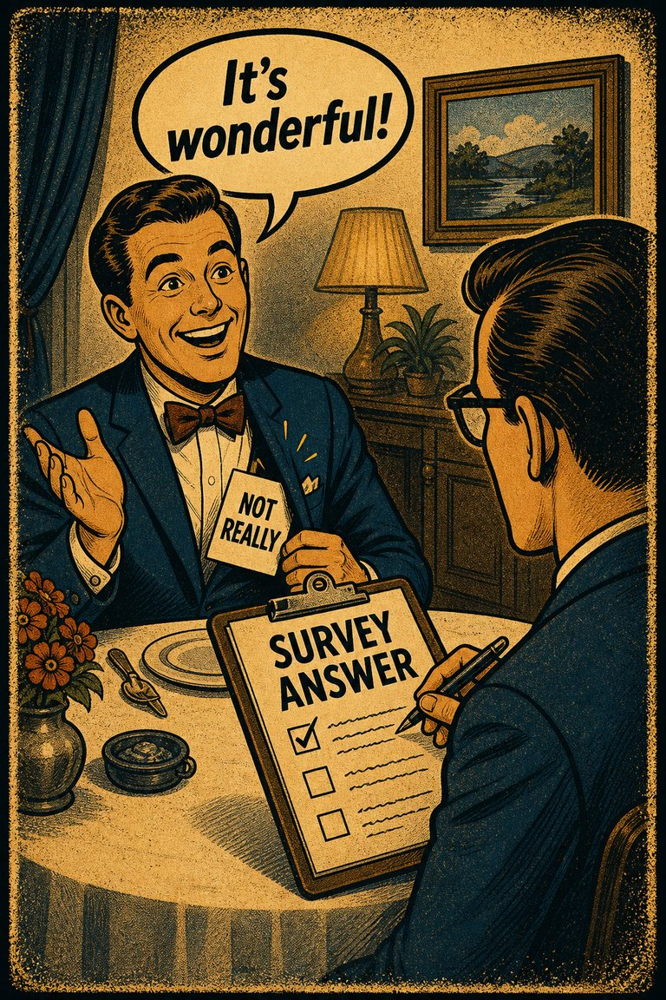

Common in social uptake
81
Highly visible in markets, politics, and fast sentiment environments.
Rare
Frequent

Cognitive Biases
A practical cognitive-bias site with clear definitions, learning paths, assessments, self-audits, and debiasing tools.
Cognitive Bias
The tendency to do (or believe) things because many other people do (or believe) the same. Related to groupthink and herd behavior
What it distorts
Biases that distort what people say they believe, prefer, or remember believing.
Typical trigger
Situations where opinion reporting is already difficult and the outcome cue feels easier to trust than a fuller review.
First countermove
Start with the opinion reporting question instead of the first intuitive answer, then check whether the outcome pattern is doing invisible work.
Coverage depth
Catalog entry
If I did not know how many others endorsed this, would my judgment move?
Wikipedia groups this bias under opinion reporting and the outcome pattern, which suggests a distortion driven by the result of an event bends how the process, evidence, or alternatives are interpreted.
These are classroom-facing editorial estimates for comparing how the bias behaves in use. They are teaching aids, not measured statistics.
Common in social uptake
81
Highly visible in markets, politics, and fast sentiment environments.
Easy to spot from outside
56
Often visible once adoption numbers are hidden from evaluators.
Easy to innocently commit
85
Popularity feels like a practical shortcut when independent review is costly.
Teaching difficulty
28
Very teachable with ordinary consumer and opinion examples.
This comparison makes the hidden pull easier to see before the technical label has to do all the work.
Biased move
This is like choosing a restaurant because the line itself starts tasting like evidence.
Clearer comparison
Crowds can contain information, but the crowd is not the meal. Good judgment still asks what the line is a line for.
Do not use this label whenever social proof matters. Sometimes popularity really does signal quality. The issue is when uptake outruns independent scrutiny.
Use this label when popularity itself is doing too much of the persuasive work.
Use the quick check, caveat, and nearby confusions together. The fastest diagnosis is often the noisiest one.
Each example changes the surface context while keeping the same hidden distortion in place.
A person starts liking a product more once it seems to be what everyone else is choosing.
A team drifts toward a tool or strategy because rival teams have already adopted it and not joining now feels like lagging behind.
People treat the popularity of a movement or claim as evidence that the underlying view must be closer to the truth.
The crowd's direction starts to feel like the safest and maybe smartest place to stand, even before the reasons are independently inspected.
Teaching note: This entry helps differentiate social proof from evidence while still acknowledging that popularity can sometimes carry information without automatically proving merit.
The strongest debiasing moves change the process, not just the label.
Write your verdict before checking adoption numbers, rankings, or visible sentiment if possible.
Ask which arguments would still remain if no one knew the popularity signal.
Hide social counts or delay exposure to them in evaluation workflows that should begin independently.
Practice And Repair
Bandwagon effect turns visible adoption into an argument. A growing crowd makes independent evaluation feel less necessary and less urgent.
A belief, product, or stance becomes visibly popular.
Convergence begins to feel like proof that the option has already survived scrutiny.
Adoption momentum starts replacing direct inspection.
Evaluate the reasons once with the popularity signal removed and again with it visible, then compare the difference.
What part of my preference is coming from the option itself rather than from the reassurance of not standing apart?
Spot It
Slow It
Reframe It
These are nearby labels that can share the same outer appearance while differing in what actually drives the distortion. Use the overlap, the distinction, and the diagnostic question together before settling the call.
Why compare it: Groupthink is about pressure inside a decision group; bandwagon effect is broader uptake driven by the momentum of others' beliefs or choices.
Why compare it: False consensus overestimates agreement; bandwagon effect conforms to agreement once it is perceived.
Why compare it: Availability cascade explains how repetition raises plausibility; bandwagon effect is the follow-the-crowd behavior that often follows.
These are useful when the label seems roughly right but the process change still feels underspecified.
What would I think here if I did not know how many people already endorsed it?
Am I following evidence or following visible adoption?
Which reasons survive if the crowd signal is removed?
These sourced cases do not prove what was in someone's head with perfect certainty. They are teaching cases for showing where the bias pressure becomes visible in practice.
Electoral and consumer momentum examples
Bandwagon effects are often discussed where visible growth in support creates more support simply because the growth is visible.
Why it fits: The popularity signal itself becomes one of the main causal drivers of later preference.
Wikipedia · Modern politics and markets
Market bubbles fed by visible momentum
During manias and bubbles, visible adoption can attract more adopters who fear missing the move or assume the crowd has already vetted the opportunity.
Why it fits: Popularity is operating as a cause of preference rather than merely a report of it.
Wikipedia · Modern finance
Use these sources to move from the teaching page into the underlying literature and seed reference material. The site is still written for clarity first, but the stronger pages should also be traceable.
A classic source for preferences that change because other people are visibly choosing or valuing something.
Seed taxonomy and broad coverage are drawn from Wikipedia's List of cognitive biases, then editorially reshaped into a teaching-first reference.
Once you know the bias, these nearby tools help you use the page in a real workflow rather than as a static definition.
Curated sequences where this bias commonly appears alongside a few predictable neighbors.
Short audits you can run before the distortion hardens into a decision, a verdict, or a post-hoc story.
Bias-aware AI prompts that widen the frame instead of simply endorsing the first preferred conclusion.
A mixed scenario set that can quietly pull this bias into the question bank without announcing the answer in the title first.
These links widen the frame around the bias without interrupting the core lesson on this page.
A theory article on how repetition, uptake, and residue can make weak claims feel progressively more settled without substantially improving the evidence underneath them.
CogBias theory
These neighbors were selected from shared categories, shared patterns, and explicit editorial links where available.

The tendency to give an opinion that is more socially correct than one's true opinion, so as to avoid offending anyone
A false belief that if you understand something you learned and acquired a knowledge about it
Perceiving effort as a poor learning
The tendency for people to ascribe greater or lesser moral standing based on the outcome of an event
The tendency to over-report socially approved attitudes or behaviors and under-report the ones likely to invite embarrassment, judgment, or sanction.
Expecting a member of a group to have certain characteristics without having actual information about that individual